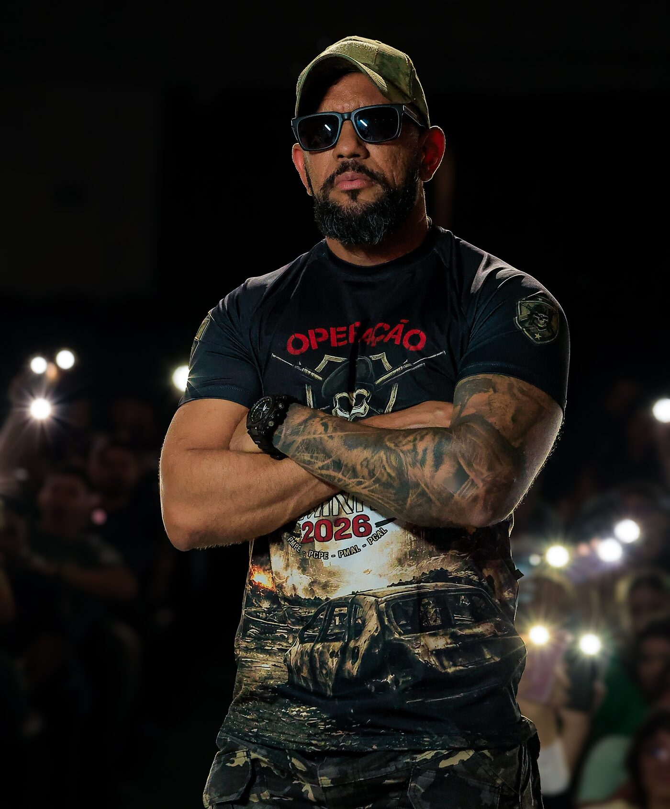
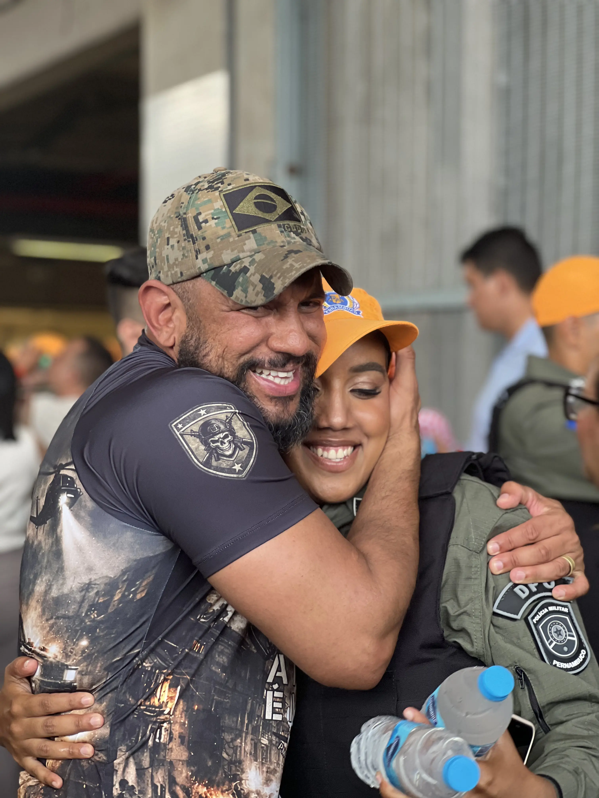
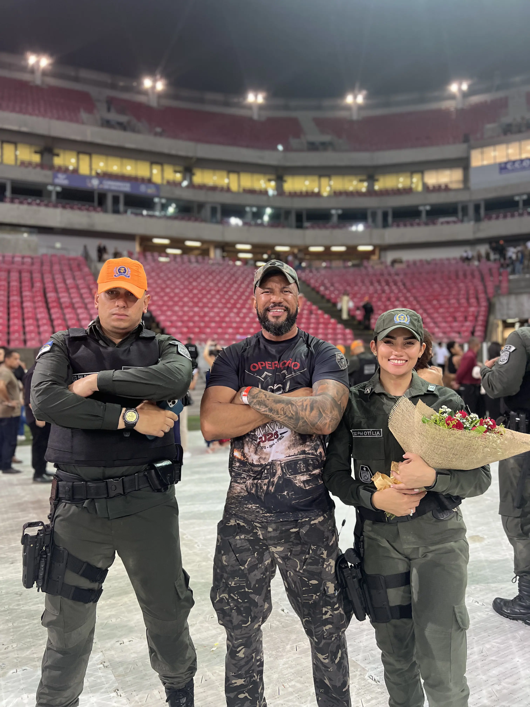
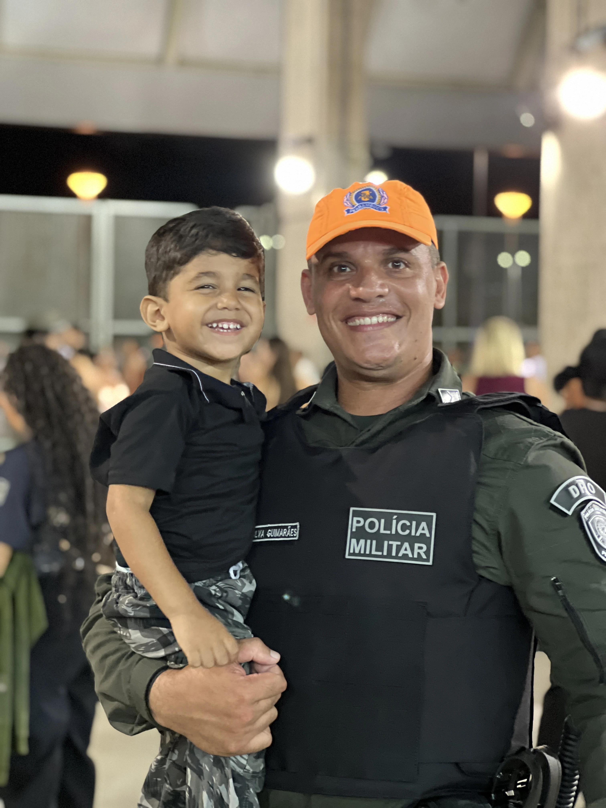
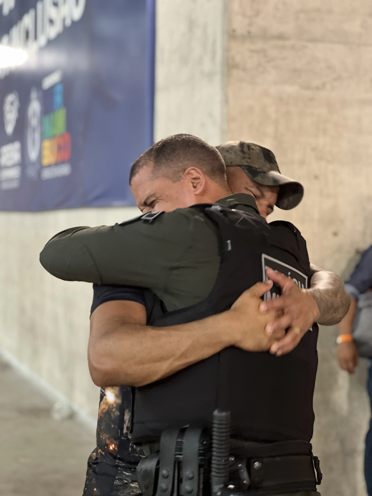
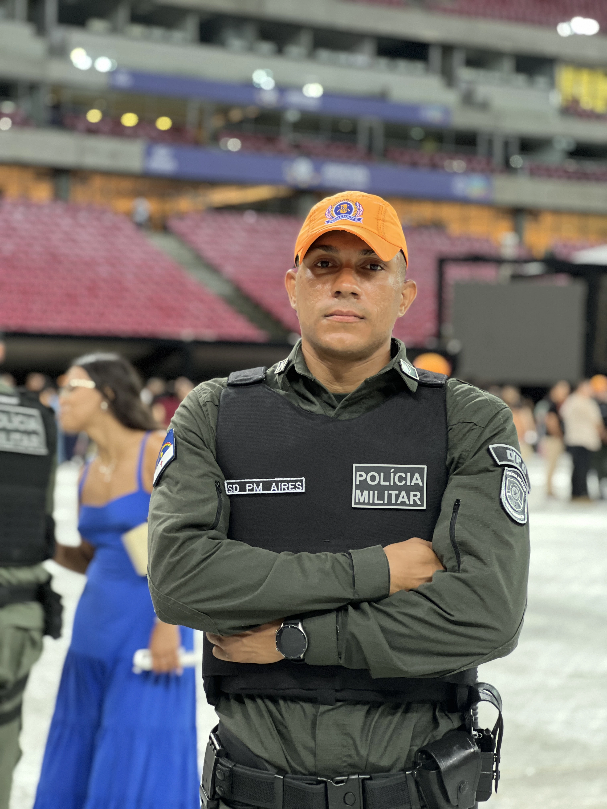
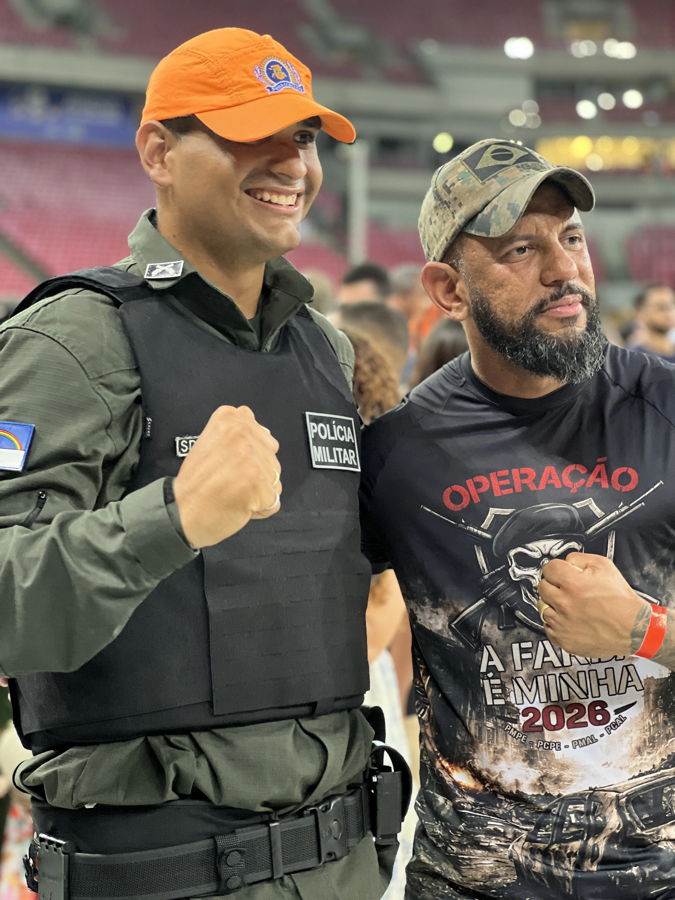
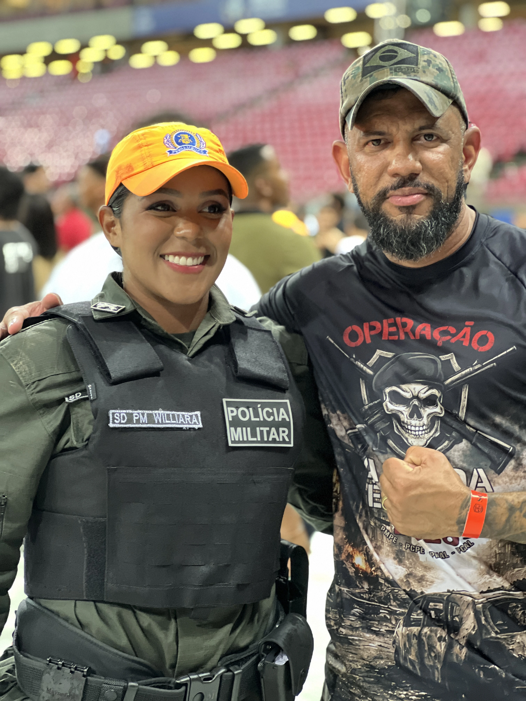

🎯
Plano individual
Uma rota de estudos montada para você, de acordo com o seu concurso-alvo e o tempo que você tem.
O acompanhamento individual do Prof. Everton Mota para carreiras policiais: um mentor ao vivo, todo mês, guiando o seu estudo até a aprovação. Assista ao vídeo abaixo.
A mentoria individual é o acompanhamento de perto que falta no seu estudo: o professor, ao vivo, corrigindo a sua rota até a aprovação.
Clique no botão abaixo para saber como funciona a mentoria individual e conversar com a nossa equipe.

Aprovado em 15 concursos públicos, o Prof. Everton Mota não ensina pelo livro. Ensina pela estrada que ele mesmo caminhou. Há mais de 7 anos forma candidatos para carreiras policiais no Nordeste, com mais de 14 mil aprovados.
Na mentoria individual, você não vai assistir mais uma aula gravada e ficar sozinho. Vai ter o professor, ao vivo, todo mês, te corrigindo, te direcionando, e respondendo pessoalmente o que está travando seu estudo.
Um acompanhamento de perto, feito para o seu concurso e o seu momento — direto com quem já passou.
Uma rota de estudos montada para você, de acordo com o seu concurso-alvo e o tempo que você tem.
Todo mês, ao vivo com o Prof. Everton Mota — corrigindo sua rota e respondendo o que trava seu estudo.
Orientação baseada em 15 aprovações reais. Nada de teoria solta: o caminho que já levou milhares à farda.
Suas dúvidas e travas respondidas de forma individual, sem se perder no meio de uma turma lotada.
Preparação direcionada para PM, PC, PRF, PF e Penal — as bancas e os editais que realmente importam.
Você não fica sozinho: um mentor presente do primeiro dia de estudo até a sua aprovação.












A mentoria é focada em carreiras policiais — PM, PC, PRF, PF e Penal. Seu plano é montado para o seu concurso-alvo, e a base construída te prepara para prestar mais de um edital dentro dessas áreas.
Você recebe um plano de estudos individual e, todo mês, tem um encontro ao vivo com o Prof. Everton Mota corrigindo sua rota, tirando dúvidas e ajustando o seu direcionamento até a aprovação.
Sim. Todos os encontros ficam gravados e disponíveis para você rever quando quiser, no seu ritmo, sem perder nenhuma orientação.
Funciona. O plano é montado de acordo com o tempo real que você tem disponível — inclusive para quem estuda poucas horas por dia. A direção certa vale mais do que muitas horas perdidas sem rumo.